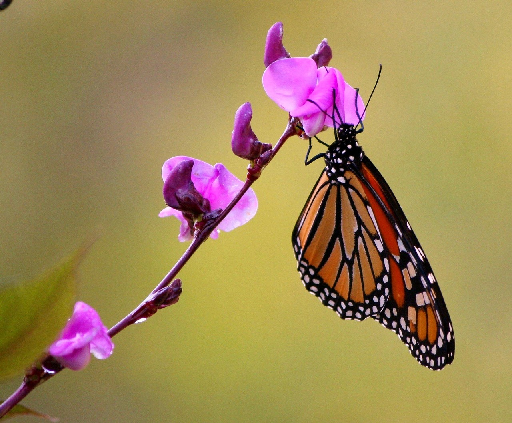

Таблица B1 · Глава 5
Монарх
Экспериментальный бумажный планёр с крыльями монарха
Экспериментальный планёр · плавный толчокЭкспериментальный планёр · ждёт лётных испытаний
Распечатать эту модель
Коротко
- Бумага
- 120 г/м², крылья вдоль длинной стороны
- Скрепки
- Две металлические скрепки по 33 мм
- Размах крыльев
- 172 мм
- Точка равновесия
- 41 мм от носа оценка
- Скорость планирования
- около 2,7 м/с оценка
- Записанные полёты
- Пока нет ещё не измерено
Как летает
Ваша бабочка — планер без хвоста. Крылья должны и держать её, и делать полёт устойчивым, поэтому важнее всего, где у неё точка равновесия.
Важны две точки. Точка равновесия — там, где модель балансирует на пальцах. Точка подъёмной силы — там, где воздух в среднем давит на крылья вверх. Для этой бабочки наша модель даёт точку равновесия в 41 мм от носа, а точку подъёмной силы — в 46 мм: 5 мм разницы, равновесие впереди. Если равновесие чуть впереди точки подъёмной силы, бабочка планирует ровно. Если позади, нос задирается, она теряет скорость и падает.
Две скрепки на голове сдвигают точку равновесия вперёд. Длинная голова работает как рычаг, поэтому хватает двух лёгких скрепок. У настоящих бабочек нет длинной шеи; нашей она нужна для равновесия.
Язычки сзади задают угол. Если чуть отогнуть их вверх, воздух давит хвост вниз, нос поднимается, и крылья создают подъёмную силу. V-образные крылья помогают бабочке выровняться после крена.
Это экспериментальный планер, наша вторая попытка. Первый вариант плохо планировал в двух ранних сборках основателя; это наблюдение, а не записанное испытание. В этой версии равновесие сдвинуто вперёд. Записанных лётных испытаний у неё пока нет. Соберите её и расскажите нам, как она летает.
Как сделать
Что понадобится Бумага 120 г/м², ножницы, линейка и две скрепки по 33 мм
-
Шаг 1 / 8
Вырежи
Вырежи по внешней линии, вместе с полосками края и булавами усиков. Сделай четыре коротких надреза сзади на задних крыльях.
Одна деталь. На каждом заднем крыле есть закрылок между двумя надрезами.
-
Шаг 2 / 8
Продави сгибы
Приложи линейку к каждой пунктирной линии и проведи по ней пустой шариковой ручкой.
На каждой линии сгиба есть бороздка. Плотная бумага сгибается ровно.
-
Шаг 3 / 8
Согни край крыла
Загни каждую полоску края под крыло по её пунктирной линии. Прижми.
Передний край прямой и двойной, как костальная жилка настоящего крыла.
-
Шаг 4 / 8
Согни корпус
Согни пополам по центральной пунктирной линии, цветом внутрь. Затем отогни каждое крыло наружу по его штрихпунктирной линии.
Два слоя корпуса висят снизу и касаются друг друга.
-
Шаг 5 / 8
Надень скрепки на голову
Надень обе скрепки на два слоя корпуса, одну поверх другой, до самого носа.
Скрепки находятся внутри пунктирной рамки.
-
Шаг 6 / 8
Проверь баланс
Положи крылья на два пальца под точками в кружках. Хвост опускается: добавь скрепку. Нос опускается: сдвинь скрепку назад или сними её.
Бабочка держится ровно на пальцах.
-
Шаг 7 / 8
Сделай букву V
Подними оба крыла в неглубокую V. Посмотри с хвоста и сравни каждый кончик с полоской.
Оба кончика на одной высоте.
-
Шаг 8 / 8
Запуск и настройка
Плавно толкните вперёд, нос ровно, примерно со скоростью лёгкого бега. Пикирует: поднимите оба язычка на 1–2 мм. Взмывает и зависает: выпрямите их.
Поворачивает влево: чуть подними правый закрылок. Вправо: левый.
Запуск
Держите корпус под крыльями большим и указательным пальцами, нос горизонтально. Встаньте неподвижно в комнате без сквозняков. Плавно толкните модель вперёд, примерно со скоростью лёгкого бега, и отпустите. Не бросайте вверх. Отметьте место первого касания пола.
Настройка
| Если модель… | Попробуйте |
|---|---|
| Пикирует в пол | Отогните оба язычка вверх на 1–2 мм. Если всё ещё пикирует, сдвиньте одну скрепку немного назад. Модель должна по-прежнему балансировать на точках. |
| Взмывает, теряет скорость и падает | Выпрямите оба язычка. Проверьте, что модель балансирует на точках. |
| Поворачивает в сторону | Немного отогните вверх язычок с внешней стороны поворота: правый, если модель уходит влево, левый — если вправо. |
| Падает сразу после запуска | Толкайте чуть быстрее. Затем проверьте язычки. |
| Переворачивается или уходит в спираль | Проверьте полоской высоту обоих кончиков: она должна быть одинаковой. Затем немного поднимите оба. |
| Крылья хлопают или провисают | Возьмите бумагу 120 г/м², крылья вдоль длинной стороны листа. Попробуйте меньший размах. |
Что попробовать. Эти советы основаны на поведении бумажных планёров. На этой модели их ещё не проверяли.
Полевые заметки

Планер дальних перелётов
Монархи летают на огромные расстояния. Каждую осень многие монархи с востока Северной Америки пролетают тысячи километров до пихтовых лесов центральной Мексики. Их гусеницы едят ваточник.
По пути бабочки часто перестают махать крыльями и планируют или парят в тёплых восходящих потоках, экономя силы. Исследователи в Онтарио заметили, что в хорошую погоду парение у них — главный способ полёта.
Наш бумажный монарх позаимствовал длинные передние крылья у путешественницы.
Попробуйте
Большая бабочка планирует дальше?
Сначала предскажите. Какая улетит дальше: монарх размахом 148 мм или 184 мм? По нашей модели кончики большой гнутся примерно вдвое сильнее.
- Распечатайте двух монархов на одной бумаге: размахом 148 мм и 184 мм.
- Уравновесьте обоих на точках.
- Запустите каждого пять раз с одного места одинаковым плавным толчком.
- Отмечайте каждое первое касание пола, даже неудачное.
На что смотреть. Чьи отметки ложатся дальше и не хлопают ли и не провисают ли большие крылья.
Копнём глубже
Бесхвостый планер летит устойчиво, когда точка равновесия находится впереди нейтральной точки — места, где действует добавочная подъёмная сила, когда нос приподнимается. У плоского крыла эта точка примерно на четверти ширины от передней кромки, в среднем по площади крыла. Расстояние между двумя точками в долях средней ширины крыла называют запасом устойчивости. Наша модель плоского крыла даёт первому варианту (K1) -10 % на бумаге 80 г/м² с одной скрепкой: неустойчиво. Этой второй версии (K2) она даёт +14 % с двумя скрепками по 33 мм на бумаге 120 г/м².
Одной устойчивости мало. Совершенно плоское крыло с равновесием впереди нейтральной точки может уравновеситься только там, где не даёт подъёмной силы, и модель пикирует. Если чуть отогнуть вверх язычки сзади — инженеры называют это реверсом профиля, — воздух прижмёт хвост вниз, и крыло будет планировать с поднятым носом и создавать подъёмную силу. Бесхвостые самолёты решают ту же задачу отогнутыми вверх задними кромками, стреловидными и закрученными крыльями. В первые годы авиации Иго Этрих и Франц Вельс построили бесхвостый планер по образцу крылатого семени лианы Alsomitra macrocarpa, которую тогда называли Zanonia.
Каждый квадратный метр крыла держит около 2,6 ньютона веса (2,6 Н/м²). При коэффициенте подъёмной силы 0,6 — это мера того, насколько усердно работает крыло, — получается скорость планирования около 2,7 м/с, как у лёгкого бега; поэтому модель запускают плавным толчком со скоростью бега, а не шага. Бумага гнётся: при волокнах вдоль размаха модель даёт прогиб кончиков около 8 мм в ровном планировании (1 g) на бумаге 120 г/м² и около 19 мм на 80 г/м². Все числа здесь — оценки модели, а не измерения.
Сделать вариант в лаборатории ↗
Ранние варианты
Первые два варианта остаются для сравнения: задние язычки (W1) и сжатый корпус (K1). В двух ранних сборках крылья K1 гнулись, и он плохо планировал. Это наблюдение, а не записанное испытание. K2 на этой странице — наша вторая попытка.
Источники
- U.S. Fish & Wildlife Service, Monarch (Danaus plexippus) · Миграция и жизненный цикл. Текст правительства США: пересказ со ссылкой.
- CONABIO, La travesía de la monarca · Путь к местам зимовки. Ссылка и пересказ.
- Gibo, D. L. & Pallett, M. J. (1979). Soaring flight of monarch butterflies during the late summer migration in southern Ontario. Can. J. Zool. 57: 1393–1401 · Парение как основной способ полёта в хорошую погоду. Только цитата, без рисунков.
- Open Flight, K2 butterfly airframe: model and trial plan (docs/research/butterfly-k2-airframe.md) · Наша модель и её ограничения. CC BY-SA 4.0.
- NASA Glenn Research Center, Beginner’s Guide to Aeronautics · Подъёмная сила, равновесие, устойчивость. Текст правительства США: пересказ со ссылкой.
- Li, Goodwill, Wang & Ristroph (2022). Centre of mass location, flight modes, stability and dynamic modelling of gliders. J. Fluid Mech. 937, A6. doi:10.1017/jfm.2022.89 · Сдвиг центра тяжести превращает планирование в пике или кувырки. CC BY 4.0.